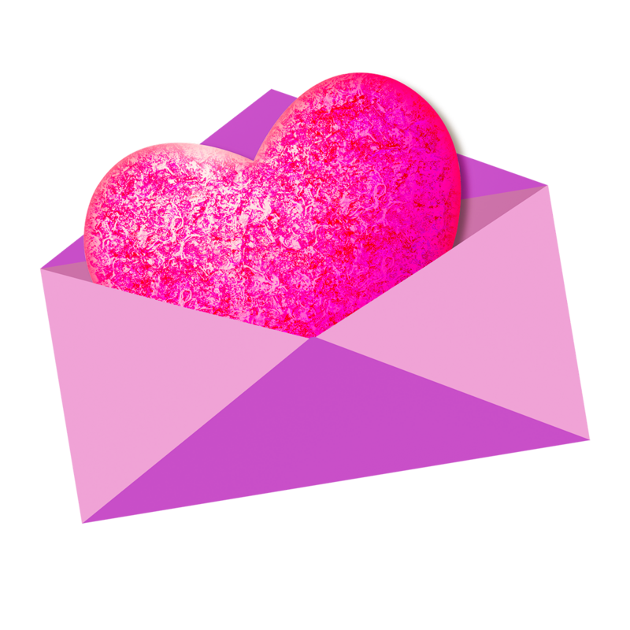
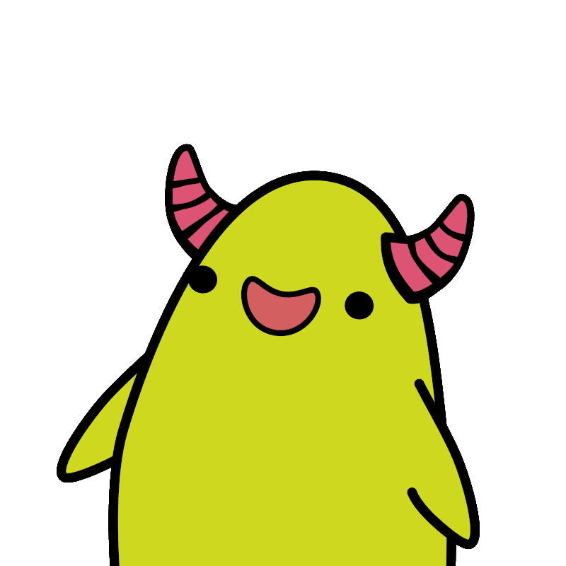
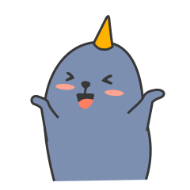

Cześć Reniu!
Za niedługo bardzo ważny dzień i nasze spotkanie! Aby przejść dalej kliknij w kopertę

Czy zostaniesz Reniu moją walentynką?

Tak
Nie
HURAAAA! ❤️

(To ja teraz)
Twoja przeglądarka nie obsługuje elementu audio.
Twoja przeglądarka nie obsługuje elementu audio.